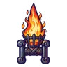

ตอไม้ถ่านคุ
มอนธาตุไฟ Lv 32–45
เจอที่
| แมพ | โซน | Lv | ภูมิภาค |
|---|---|---|---|
| ป่าไหม้ถ่านคุ | ทุ่งเถ้าถ่าน | 38–45 | ที่ราบสูง |
| ทุ่งตอไม้ควันขาว | ตอไม้ยักษ์ควันขาว | 32–45 | ที่ราบสูง |
| หุบเถ้าลอย | 32–45 | ที่ราบสูง | |
| ป่าที่ยังไหม้ | 32–45 | ที่ราบสูง | |
| หอรากมืด (Dark Root) | เส้นเลือดถ่านไฟ | 33–42 |
ค่าสถานะตามเลเวล
| Lv | HP | ATK | DEF | MDEF | EXP | Job |
|---|---|---|---|---|---|---|
| 32 | 4,687 | 57–86 | 18 | 5 | 45 | 34 |
| 38 | 7,537 | 76–114 | 21 | 6 | 52 | 39 |
| 45 | 12,163 | 92–139 | 25 | 7 | 61 | 46 |
ตีด้วยธาตุไหนดี
แรงขึ้น: น้ำ ×1.5 พิษ ×1.25
เบาลง: ดิน ×0.5 ไฟ ×0.25
วัตถุดิบที่ดรอป
| ของ | โอกาส | |
|---|---|---|
| ถ่านไม้คุไฟ | 60% | 1 ชิ้น (15% ได้ 2) |
อุปกรณ์ที่ดรอป (10)
| ของ | โอกาส |
|---|---|
| 0.25% | |
| 0.25% | |
| 0.25% | |
| 0.12% | |
| 0.12% | |
| 0.12% | |
| 0.06% | |
| 0.06% | |
| 0.06% | |
 คาทาร์กระถางไฟ | 0.06% |
สกิล
ทุบพื้น (Lv 25+) · ทุบพื้น (Lv 60+) · ร่างแข็ง (Lv 60+)